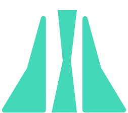

STEP 1
QUIZ
.btn:active + .progress > .progressbar {
transform: scaleX(1);
}
.progress {
border-radius: 10px;
display: flex;
margin: 3% auto 3% auto;
width: 40%;
height: 15px;
border: 2px solid wheat;
}
.progressbar {
border-radius: 10px;
transform-origin: 0% 50%;
transform: scaleX(0);
transition: transform 1000ms cubic-bezier(0.32, 0, 0.07, 1);
width: 100%;
height: 100%;
background: #43D9B8;
}
@keyframes progressbar {
0% {
transform: scaleX(0);
}
18% {
transform: scaleX(0.15);
opacity: 0.2;
}
30% {
transform: scaleX(0.5);
}
35% {
transform: scaleX(0.6);
animation-timing-function: cubic-bezier(0.9, 0, 0.1, 1);
}
60% {
transform: scaleX(0.9);
animation-timing-function: cubic-bezier(0.9, 0, 0.1, 1);
}
90%, 100% {
opacity: 1;
}
100% {
transform: scaleX(1);
}
}
Here the motion is almost the same. If you use transform:scale(0) your object will disapear.
Then to create a motion, you add the scale you need to the button when it is active.
The new part is the cubic-bezier function that allows you to accelerate or decelerate the motion when you want.
You can create your own curve here https://cubic-bezier.com.
Use transform: scaleX(); and animation-timing-function: cubic-bezier();
.color-shape-motion-ball {
width: 300px;
height: 300px;
background-color: lightcoral;
position: absolute;
animation: rounded 3s alternate infinite;
margin-left: 4px;
}
.color-shape-motion-ball::after {
content: "";
width: 300px;
height: 300px;
background-color: lightgreen;
position: relative;
display: block;
z-index: 1;
animation: disapear 3s alternate infinite;
}
@keyframes disapear {
0% {
opacity: 0;
transform-origin: 0% 0%;
border-radius: 0;
}
100% {
opacity: 1;
border-radius: 50%;
}
}
@keyframes rounded {
0% {
border-radius: 0;
}
100% {
border-radius: 50%;
}
}
Here you'll understand how to create a motion that runs without a button.
The 'alternate infinite' value in an 'animation' property will allow you to create a motion that runs forever.
The other point is the way of mixing 'animation' property and the 'keyframe' function. You'll manage to use various motions and activate them at various moment of the motion.
Use animation: disapear 3s alternate infinite; and animation: rounded 3s alternate infinite;
.load {
width: 30vh;
height: 22.5vh;
display: flex;
justify-content: space-evenly;
}
.load__bar {
background-color: #15DEA5;
height: 100%;
width: 3vh;
animation: bars 1000ms;
animation-fill-mode: backwards;
animation-iteration-count: infinite;
animation-direction: alternate;
animation-timing-function: ease-in-out;
}
.load__bar--1 {
animation-delay: 166.6666666667ms;
}
.load__bar--1-inv {
animation-delay: 166.6666666667ms;
animation-direction: alternate-reverse;
background-color: #0E397F;
}
.load__bar--2 {
animation-delay: 333.3333333333ms;
}
.load__bar--2-inv {
animation-delay: 333.3333333333ms;
animation-direction: alternate-reverse;
background-color: #0E397F;
}
.load__bar--3 {
animation-delay: 500ms;
}
.load__bar--3-inv {
animation-delay: 500ms;
animation-direction: alternate-reverse;
background-color: #0E397F;
}
.load__bar--4 {
animation-delay: 666.6666666667ms;
}
.load__bar--4-inv {
animation-delay: 666.6666666667ms;
animation-direction: alternate-reverse;
background-color: #0E397F;
}
.load__bar--5 {
animation-delay: 833.3333333333ms;
}
.load__bar--5-inv {
animation-delay: 833.3333333333ms;
animation-direction: alternate-reverse;
background-color: #0E397F;
}
@keyframes bars {
0% {
transform: scaleY(0.2);
}
100% {
transform: scaleY(1);
}
}
Here you'll find various animations properties.
You can name them like that and separate them, but it is possible to use one single animation property and put all the values together (animation: bars 1000ms backwards infinite alternate ease-in-out).
The reason for separating animation's values is that you'll can change them separately.
Use transform: scaleY(0.2); and animation-delay, animation-direction: alternate-reverse;